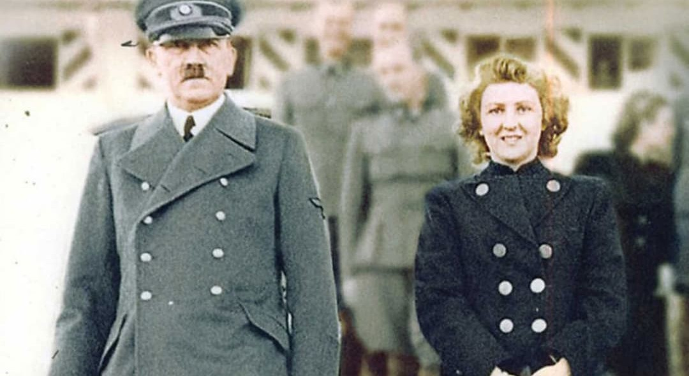
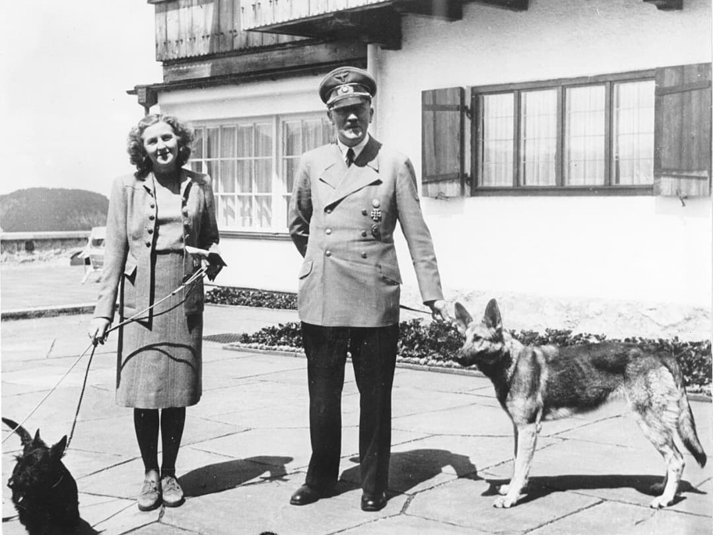
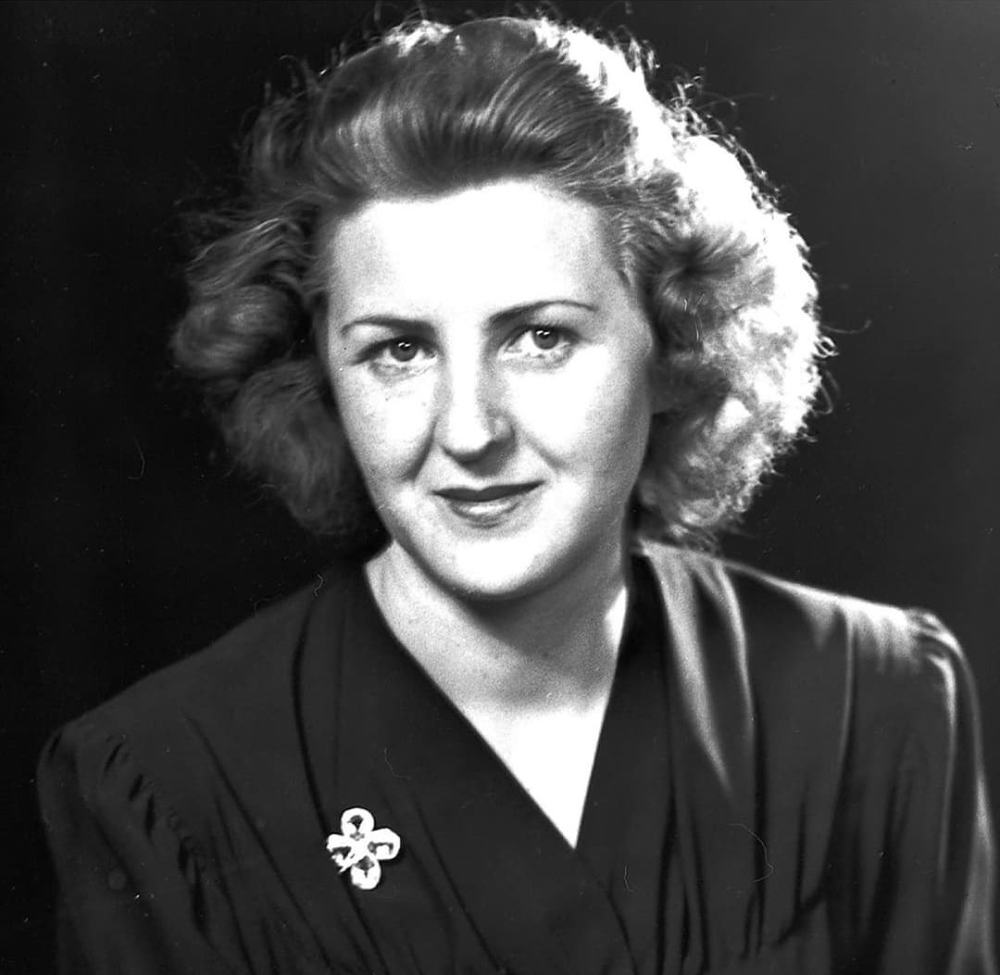

Eva Braun est la compagne d’Adolf Hitler pendant plus de quinze ans, puis son épouse durant les dernières heures dans le Führerbunker. Figure centrale de la vie privée du dictateur, elle n’a pourtant aucun rôle politique.
Ses films couleur et ses photographies du Berghof constituent aujourd’hui des témoignages rares sur le cercle intime du régime nazi.
Eva Braun naît le 6 février 1912 à Munich. Elle travaille comme assistante pour le photographe Heinrich Hoffmann, photographe officiel du NSDAP.
Elle rencontre Hitler en 1929, à seulement 17 ans. Leur relation reste strictement cachée du public allemand afin de préserver l’image du “chef célibataire”.

Eva Braun vit principalement au Berghof, la résidence d’Hitler dans les Alpes. Elle y mène une vie mondaine faite de mode, sport, danse et photographie.
Ses films couleur montrent le cercle privé du régime : repas, promenades, invités, moments détendus loin de la propagande officielle.

Eva Braun n’exerce aucune fonction politique. Elle ne participe pas aux décisions militaires ou stratégiques. Hitler la maintient volontairement dans la sphère privée.
Cette séparation stricte entre vie intime et pouvoir politique est un élément central pour comprendre la personnalité du dictateur.
Eva a une sœur, Gretl Braun, également proche du cercle privé du régime. Gretl épouse en 1944 Hermann Fegelein, officier SS et membre de l’état-major de Himmler.
La famille Braun apparaît régulièrement dans les films privés du Berghof.
En avril 1945, Eva Braun rejoint Hitler dans le Führerbunker à Berlin. Elle refuse de fuir malgré l’effondrement du Reich.
Le 29 avril 1945, elle épouse Hitler. Le lendemain, le couple se suicide : Hitler par balle, Eva par cyanure. Leurs corps sont brûlés dans le jardin de la chancellerie.
Eva Braun incarne la dimension privée du régime nazi. Ses films et photos permettent de comprendre la dualité entre la vie intime du dictateur et la violence du système qu’il dirige.